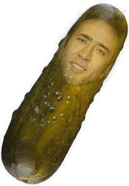

Academia de Ninja

Academia de Ninja cei mai puternici
- Despre Ninja nu se stiu foarte multe, doar ca sunt Ninja si au arme.
- Ei au foarte multe arme. Toate! Ei ar trebui sa stea ascunsi si ziua si noaptea.
- Multi ninja reusesc. Alti ninja mai bleguti nu reusesc.
- Cei care nu reusesc sunt vazuti de oameni si se ajunge sa se vorbeasca pe internet despre ei.
- Ca acuma cand va scriu eu povestea asta despre Ninja, astia sunt aia care nu au reusit.Prosti.
- Apoi Ninja mai stiu si karate puternice care poate sa loveasca tot.
- Si lemn si plastic si beton si carton si fier si fiarele din padure si pe oameni daca vrea ei.
- Ninja nu bea multa apa ca oamenii, ei bea putin si mananca putin si asa ajung rapizi de tot.
- Cine nu ma crede sa alerge el un ninja ia sa vedem care e mai rapid daca ai tu curaj.
- Daca vrei si tu sa ajungi ninja, trebuie sa te antrenezi cu un maestru in padure multe saptamani.